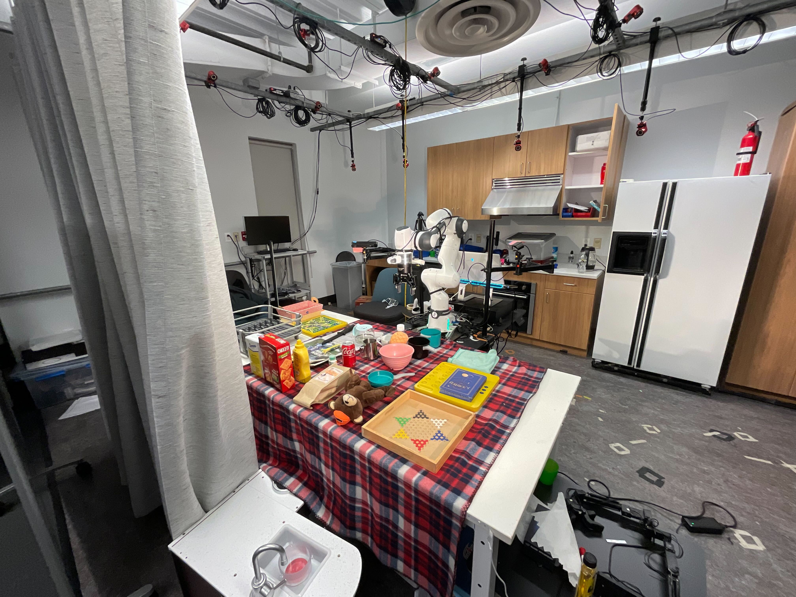
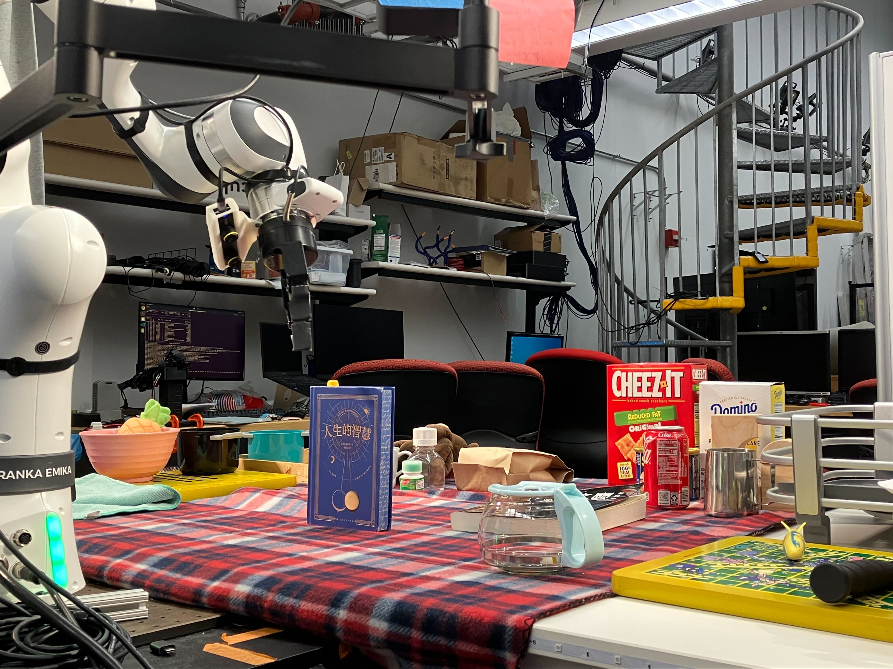
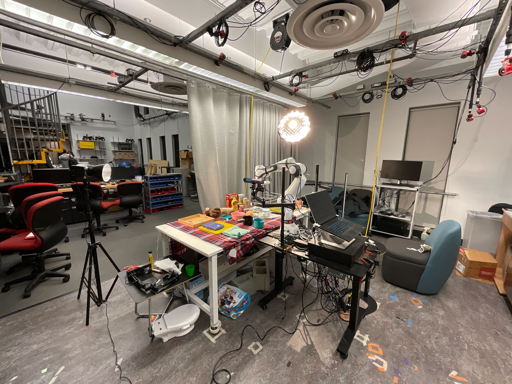
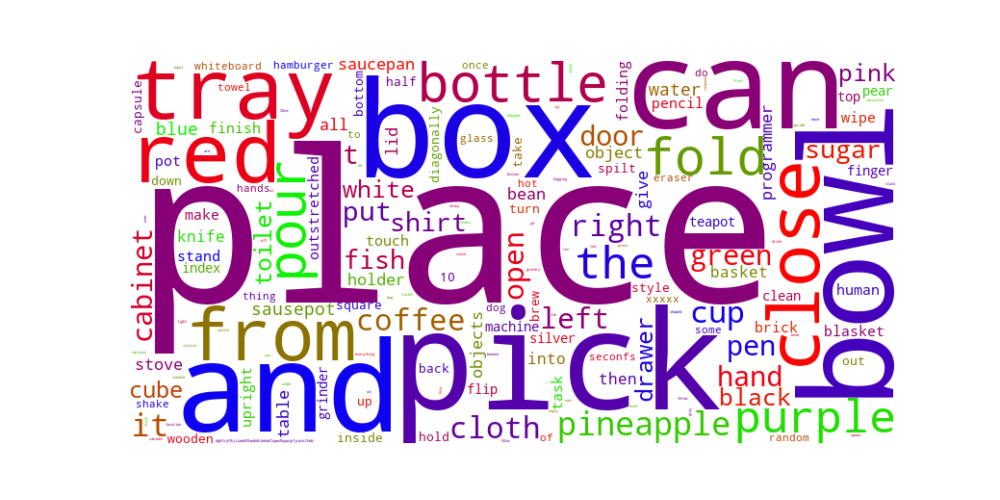
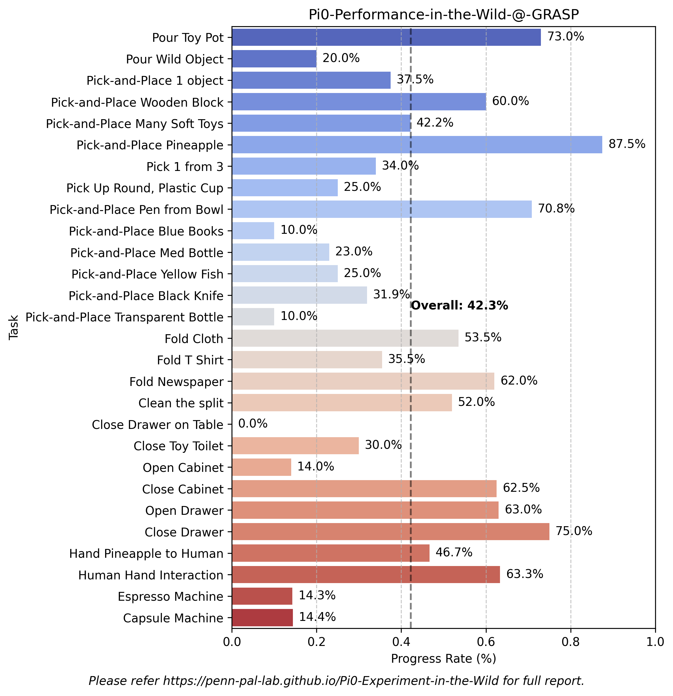
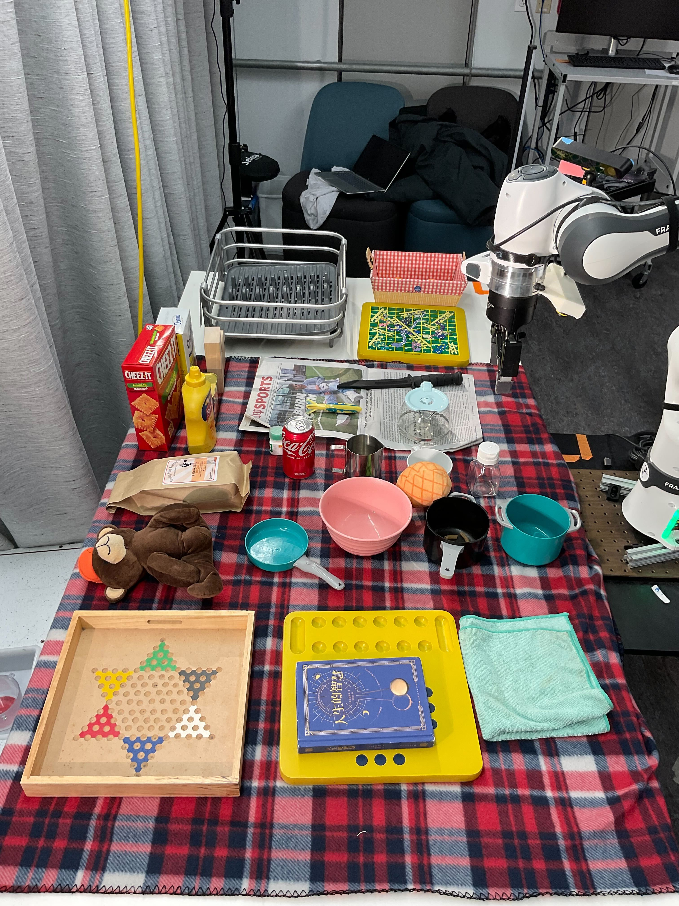
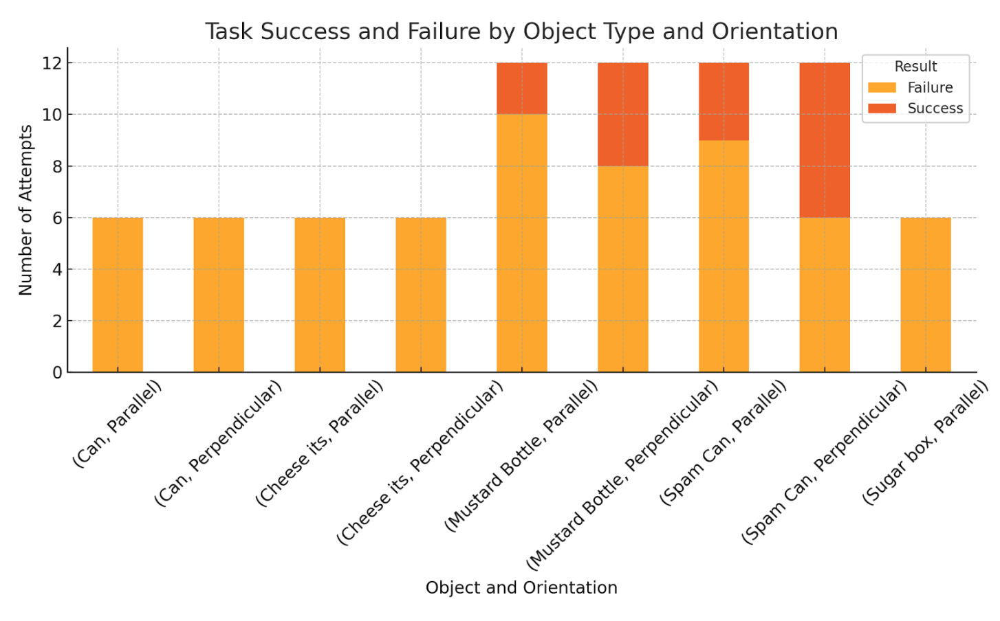
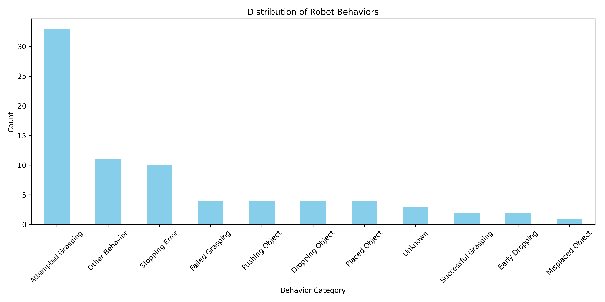
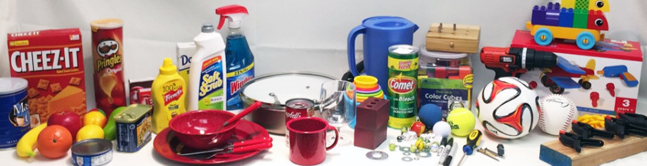

Our evaluation setup showing the robot workspace, test objects, and typical manipulation scenes.
\( \pi_0 \) commanded to fold a newspaper, having never seen this particular workspace before.



Our evaluation setup showing the robot workspace, test objects, and typical manipulation scenes.
Our experiments took place in a kitchen environment, see images above. The kitchen has a diverse selection of objects, backgrounds and lighting conditions, making it ideal for coming up with a large variety of tasks. Critically, vibe-based evaluation only becomes trustworthy when people can easily try out and verify the models themselves. Like open-source LLMs, Pi0's ease of deployment makes these kinds of evaluations accessible for any robotics lab with a DROID setup. We summarize our discoveries over 300+ trials of \( \pi_0 \) below, exploring its capabilities, quirks, and its implications for the future of robot learning. We hope that our work inspires others to try out \( \pi_0 \) for themselves! --> Evaluating robot policies is difficult because it is hard to come up with a selection of tasks that cover the wide range of behaviors an arbitrary user would find useful.
We take inspiration from the NLP community, by adopting their "vibe-checking" approach. Vibe-checking involves the user directly evaluating the LLMs themselves by chatting about whatever topic comes into mind, rather than relying on a standard benchmark. Similarly, we subject \( \pi_0 \) to "vibe checks," which are unstructured real world tasks generated by the end user. We improvise tasks, alter camera angles, rearrange objects, and try to think of edge cases to stress-test the model.

We conducted over 300 trials of \( \pi_0 \) on various manipulation tasks. It is important to stress that our evaluations were conducted to satisfy our own curiosity about the capabilities of the model (e.g. how does \( \pi_0 \) handle articulated objects, or occluded viewpoints), and do not provide a comprehensive evaluation of the model's capabilities. We summarize our findings below:
Below, we elaborate on our findings in detail, going through success and failure behavior of \( \pi_0 \), as well as some additional interesting phenomena we discovered.
Below we showcase six cherry-picked rollouts that highlight \( \pi_0 \)'s strengths. We found two impressive points: (1) \( \pi_0 \) has good vision-language understanding and (2) can imitate sequential behaviors in any scene, which we will discuss in detail in the rest of this section.
"Place the yellow fish into the purple box"
Precise placement of the camouflage fish into the box
"Open the drawer"
Opens drawer with multiple pulls to make sure it is fully open
"Hand the pineapple to the programmer"
Safe object handover to the programmer, even with wire occlusion from the side view
"Pour water from the silver cup to the pink bowl"
Pours real water from the Latte art vat into the target bowl
"Pick up all the objects into the basket"
Sequential placement of all the toys into the basket
"Close the capsule lid of the coffee machine"
Handles previously unseen device
Powered by PaliGemma, Google DeepMind's 3B VLM, as its vision encoder (Beyer etc, 2024), \( \pi_0 \) demonstrates robust scene comprehension and adaptability. Despite relying solely on uncalibrated monocular RGB inputs (224x224 pixels after compression), it can handle very challenging objects and environments, including transparent or camouflaged items, and items it has not seen during training.
1. It can grasp transparent objects
\( \pi_0 \) is capable of identifying and manipulating transparent objects, as shown below. It picks up the bottle with a stable grasp, aligns it to the small cup, and precisely drops it in. Many traditional grasp detection techniques require an accurate 2D or 3D reconstruction of the scene, and transparent objects can cause issues in reconstruction accuracy. What makes it even more impressive is that the model can detect transparent objects solely from uncalibrated, mono-RGB images.
"Place the plastic bottle into the white cup."
"Place the plastic bottle into the bowl."
2. It can grasp an object even when it is camouflaged into a colorful background
\( \pi_0 \) can identify the 'yellow fish' here even when it is placed on top of a colorful board game. This object has an unusual and difficult shape, and it blends in well with the background, but \( \pi_0 \) detects it well enough to grasp it up.
"Place the fish into the red box"
"Place the fish into the purple box"
3. It is robust to human activity in the input
During evaluation, there were many times where the side-view camera captured humans moving around in the background. However, \( \pi_0 \) can always focus on its task, keeping the robotic arm's movements focused on object manipulation.
We believe there are two reasons for \( \pi_0 \)'s robustness to human movement. First, the pre-trained VLM backbone of \( \pi_0 \) is trained on images involving humans (Sharma et al., 2018, Changpinyo et al., 2022a, Kuznetsova et al. 2020), so humans are in-distribution. Next, as our occlusion experiments in Section 2.3.1 show, the policy seems to prioritize the wrist camera's images during pick-and-place tasks, so distractors in the side-view camera seem to minimally affect the policy.
Here are two side-view videos involving humans in the scene. Please refer to Appendix B.6 for more experiments on human-robot interaction.
(All videos featuring humans were uploaded with permission from the individuals involved.)
"Pick the pineapple and place it into the basket"
"Hand the pineapple to the outstretched hand"
Many existing works in Computer Vision and Robotics focus on transparent object detection and manipulation. But the nice part here is that we have an end-to-end, data-driven system that does it, without any special logic or care for transparent objects.
"\( \pi_0 \)'s ability to handle transparency, clutter and distractors hints at a future where robots see the world as humans do—through semantics, not just pixels."
If you are a human, you can easily imitate the behavior of the robot in the videos above. This is because the robot's behavior is sequential, and each step is independent of the previous step. However, it was not true for the history of robotics. Traditional behavior-cloning models may be able to memorize one exact path; But changing a scene and or start from different height could cause model fails. This is because the variance of the data could cause robot learning very bad behaviors, like collision and failure. Through our experiments, we observed that \( \pi_0 \) exhibits similar behavior patterns across a wide range of manipulation tasks. Although it is an autoregressive model without any memory or history, \( \pi_0 \) often executes the tasks step by step like:
Reach → Grasp → Transfer → Release → Reset → Idle
What's remarkable is that this pattern is not hard-coded in model structure, but emerges naturally from millions of demonstration data — suggesting that \( \pi_0 \) learns consistent task execution priors across environments. For instance, even when \( \pi_0 \) is unfamiliar with an object or task, it often proactively explores near affordance-rich areas, using its wrist camera to decide whether to grasp or not.
In certain trials, we also observed reset-like behaviors: if \( \pi_0 \) perceives the task as complete (e.g., after placing an item into a bowl), it may return to its home configuration and stop. While this often indicates a well-formed task boundary, it can also lead to early stopping/freezing, especially in multi-object scenes — see Section 4.1 for analysis of early stopping failure cases.
While this sequencing might suggest that \( \pi_0 \) has learned an internal understanding of the task, we caution against such framing. These patterns may reflect properties of the data distribution (e.g., Markovian, short-horizon tasks), rather than indicating the policy has acquired explicit task inference or memory.
"Remove the pink bowl from the tray"
Reach bowl's edge -> Grasp -> Lift away -> Release -> Reset
"Stack the wooden blocks"
Reach cube's top-> Grasp -> Transfer -> Stack -> Release -> Repeat
"Fold the cloth from left to right"
Reach a corner -> Pinch -> Pull -> Release -> Reset
However, it doesn't mean we have solved imitation learning. \( \pi_0 \) follows subtask sequences in a sensible way is maybe more of an observation about the task family rather than the algorithm at hand — many of the tested tasks may be sufficiently markovian that a history-less policy can follow a sensible chain of subtasks. We will discuss more in the Section 4.
\( \pi_0 \) demonstrates very impressive robustness across different tasks, locations, and lighting conditions. However, we have also observed some failure cases:
"Pour water from teapot into bowl"
Cannot manipulate a novel glass teapot (0% success rate)
"Pick the black box on the white box"
Cannot handle unseen background well (0% success rate)
"Pour water into the pot"
Pick up the pot instead of water bottle (20% success rate)
"Place the can into the tray"
Misjudges object position relative to container (30% success rate)
"Close the right cabinet door"
Fails to open toy kitchen cabinet on the table (0% success rate)
"Pour coffee bean into the grinder"
Cannot work with espresso machine (0% success rate)
One common failure case is that policy may freeze unexpectedly during execution, leaving tasks incomplete until a human intervenes. This behavior comes from two related factors: semantic ambiguity and autoregressive action decoding limitations.
"Hand the pineapple to human"
Freezes in the air
"Open the drawer"
Freezes after grasping the handle
"Place the book into the bookshelf"
Hold book horizontally in the air, move very slowly
1. The VLM part doesn't understand the instruction
Unlike those commercial chatbot with large parameters, \( \pi_0 \) is built upon PaliGemma, a very small VLM model. Therefore, it lacks the commonsense reasoning that LLMs can use to recognize unfamiliar object categories. When it does not understand a command, it gets stuck. In some experiments, we found that some objects / instructions are out of distribution (OOD), causing early stopping. To show how bad the PaliGemma model performs, we attached a Vision-Question-Answering (VQA) example in Appendix C.
2. \( \pi_0 \) remembers only the now, but many tasks need a sense of before-and-after
\( \pi_0 \) is a memory-less policy, meaning its next move depends only on the current camera images, it never "remembers" what it did a moment ago. That works for single, snap-shot actions(e.g. pick up a cup), but can fail when a task needs several coordinated steps. For example, here is an articulation task that requires multiple steps and freeze in the middle:
Why? In the training data, most frames showing a robot holding a handle are idle frames—nothing moves. \( \pi_0 \) always chooses the most common action it has seen for a given image. So when it sees "hand-on-handle," the safest bet in its experience is "do nothing."
How could we fix this? We asked folks from Physical Intelligence, and the answer is: Shake the dice a little. Instead of always taking the single most likely (arg-max) action, we can allow a bit of randomness—called "sampling with temperature." By letting \( \pi_0 \) occasionally pick the second-most likely action, it may start pulling instead of freezing, and the drawer finally slides open.
3. Token Decoding Edge Cases
During inference, \( \pi_0 \) will throw out this error:
Error decoding tokens: cannot reshape array of size 79 into shape (8)
According to our discussion on Github Issue#373, sometimes the policy decoded mis-shaped actions occasionally during inference. In official implementation, \( \pi_0 \)-fast-droid defaults to "no-motion" in these cases. Because the robot continues querying the policy, the error is skipped on subsequent queries, allowing the robot to quickly recover and continue decoding correctly-shaped outputs.
Warning: Don't kill the \( \pi_0 \) Inference Server when early stops occur. Be careful as the robot may continue moving before the server restarts!

A visualization of Robot Joint and Gripper states during early stops
\( \pi_0 \) often struggles with spatial reasoning about height. For example, when asked to pick up an object and place it into a container, the policy cannot lift the object high enough to clear the height of the container. This suggests one drawback of image-based policies: the policy does not have a metrically accurate method to determine the distance between the gripper and the surrounding environment.
As shown here, the robot seems to think the gripper is high enough, and so it pushes the destination container when it tries to place the object into it. Existing methods using monocular RGB images are able to accurately estimate the size of an object, and the distance between the height of the object and the bowl. The model should be able to understand that if it could increase the height of the object relative to the container, it could complete the task successfully.
"Place the plastic bottle into the pink bowl" - \( \pi_0 \) fails to lift the bottle high enough and always it collides with the bowl
"Touch the index finger of outstretched hand" - \( \pi_0 \) correctly touches the finger, but it uses the strong force of the gripper
We also tried to prompt \( \pi_0 \) to raise the gripper higher (i.e. "raise the bottle high enough / up 10cm to avoid collision..."), but this did not help. When \( \pi_0 \) is asked to operate with an articulated object, it becomes even harder for it to estimate the distance from the side view camera, causing frequent collisions. This is particularly worth noting when the robot is interacting with humans. Because the robot has no safety constraints, it will sometimes accidentally hit / grasp the user's hand, which could hurt the user!
What's more, when \( \pi_0 \) is told to manipulate a household appliance that it did not see during training, it will tend to collide with the device or stop during trials. As shown below, \( \pi_0 \) can not use the coffee machine in our lab.
"Take out the cup under the coffee machine" → collides with top of machine
"Raise the lever of coffee machine" → didn't understand where the lever is.
One possible solution is to use techniques such as voxel maps and planning constraints. Including depth information with a depth camera could also be helpful to implement collision avoidance.
Additionally, purely image-based policies lack tactile feedback. In our trials, \( \pi_0 \) sometimes applied too much force to delicate objects like human fingers, or too little to firmly grasp heavier ones like the plastic bottle. Complementing vision with tactile sensors or with low-level force controllers could help overcome these issues.
We investigated how variations in the prompts provided affect the policy's behavior, and found that \( \pi_0 \)'s performance heavily depends on the instructions given by the user, leaving space for prompt engineering.
| Instruction | Success Rate | Behavior |
|---|---|---|
| "Close the toilet" | 0% | Wanders aimlessly, unable to localize the target. |
| "Close the white lid of the toilet" | 100% | Always closes the toy toilet. |
Close the white lid for the toilet (Success)
Close the toilet (Failure)
When given no specific language instruction, \( \pi_0 \) defaults to interacting with the most familiar objects from its training data:
In the DROID dataset, marker pens comprise 16.67% of objects, which could influence \( \pi_0 \) to pick the pen up when it is only given vision guidance. Default behaviors are heavily influenced by training data distribution. Overcoming this ambiguity and rejecting invalid instructions is still an ongoing problem.
dgbfzjkfhjilawhdfkAWHDKLWHADFiQAWFHqawipfjcasklfmdc
(nonsense, always pick up pen)
xxx
(nonsense, the policy will back and forth)
One of the most frequently asked questions about \( \pi_0 \) is, how robust is it when its visual inputs are disrupted? We ran several tests on blocking the camera and the object.
Setup:
Block the left camera: \( \pi_0 \) can still find pink object.
| Blocking Type | Success Rate | Behavior |
|---|---|---|
| No Block | 100% | Baseline: Perfect execution. Picks correct object, then explores others. |
| Block Side Camera Mid-Trial | 50% | Relies on wrist camera to pick up the object → success rate decreases. |
| Block Wrist Camera Entirely | 0% | Frozen—no recovery. |
| Block Both Cameras Initially → Unblock Mid-Trial | 75% | Chaotic exploration → can execute after unblocking. |
No Block: 100% execution.
Side Camera Blocked Mid-Trial: Robot is interrupted but can still complete the task.
Wrist Camera Blocked Entirely: Frozen.
Both Blocked, then Unblocked: Recovers.
Setup:
From three boxes: 66.67% \( \pi_0 \) can easily find the target object from different boxes on the table.
Inside Drawer: 25%
Franka's collision with the drawer makes \( \pi_0 \) hard to pick out the pineapple.
Hidden under cloth: 0%
\( \pi_0 \) is unable to explore the environment that requires interaction exploration:.
Our evaluations show that \( \pi_0 \) is a promising generalist policy: it demonstrates intelligent behaviour in unseen manipulation scenes. However, many challenges remain —-- saying we are "very impressed" is true, but only with right context. Remember, we've had roughly 50 years of robotics research. Until now, you couldn't just download someone else's controller, load it onto your own robot, and expect it to do even simple things. If \( \pi_0 \) can do that --- even at 20 - 50 % success on simple tasks straight out of the box, that alone marks a major leap forward.
As discussed in section Problems and Quirks, our experiments reveals that performance is sensitive to prompt phrasing, and the policy still struggles with instruction following, fine-grained manipulation and partial observability. We don't expect \( \pi_0 \) to be installed in everyone's home tomorrow, but we hope to see more advancement. Let robot go and run , let it do reasonable things step by step, which may not finish task every time, but it moves in the right direction. We are optimistic that continued research will address these issues and bring truly generalist robot policies closer to the practical reality.
We are grateful to Will Liang, Hungju Wang, and Sam Wang for their assistance in setting up the π0 environment. We further thank Kaustubh Sridhar, Tianyou Wang, Ian Pedroza, Ethan Yu, Tim Song, and Yiqian Li for their help doing the experiments.
We also thank Junyao Shi, Aurora Qian, Leon Kim, and Jason Ma for their insightful suggestions on evaluating a generalist manipulation policy.
We extend our appreciation to Karl Pertsch from Physical Intelligence for his constructive feedback on the early blog draft.
This project was supported in part by the National Science Foundation Graduate Research Fellowship Program under Grant No DGE-2236662. Any opinions, findings, and conclusions or recommendations expressed in this material are those of the author(s) and do not necessarily reflect the views of the National Science Foundation.
If you find this evaluation useful for your research, please consider citing our repository:
@misc{pi0-experiment-wild,
author = {J. Wang*, M. Leonard, K. Daniilidis, D. Jayaraman, & E. S. Hu},
title = {Evaluating pi0 in the Wild @ GRASP Lab: Strengths, Problems, and the Future of Generalist Robot Policies},
year = {2025},
publisher = {GitHub},
url = {https://penn-pal-lab.github.io/pi0-Experiment-in-the-Wild}
}The following are details of our experiment set up.
GPU Server:
Workstation

Across our 300+ test trials, \( \pi_0 \) achieved varying degrees of progress.
For each category, we list some example rollouts and instructions as below.
We observed that performance varied significantly based on task type, environmental conditions, and most importantly, the task instructions.
Left: Performance across 300+ trials, average progress 42%.
We divide the tasks into 7 categories: Pick-and-Place, Pour, Articulated Objects, Fabric Manipulation, YCB Benchmark, Human Robot Interaction and Coffee Machine Challenge.
For each task, we list the progress score and success rate.
Note here is vibe-check, not a rigorous evaluation, which still shows some strengths and weaknesses of \( \pi_0 \).
For each category, we list the example rollouts and instructions./p>
We let \( \pi_0 \) plays with over 50 different objects, where most of them are not toy but daily usage items.
We don't expect \( \pi_0 \) to pick up all objects, becausse some of them are just out of scope for our franka panda arm. But it should show an intuition to decide which object to pick up. Here are some observation about \( \pi_0 \)'s performance.
Strengths:
Weaknesses:
image: part of the evaluation objects

Pour is an interesting task for robotics researchers, as it requires robot to "keep the container upright while transporting it, align the spout with the target container, and then tilt the cup at the correct angle to pour the liquid" (ReKep).
Here are some observation about \( \pi_0 \)'s performance.
Pour Toy Items (73.3% Progress)
Pour Real Items (20% Progress)
\( \pi_0 \) can exectute pour behavior on toy, empty and light container. But when you demand it to pour real liquid, it will fail.
However, this could also be limited by robot's physical capabilities. The robot's gripper is not suitable to grasp the teapot firmly.
"Pour coffee bean into the bowl"
"Pour the tea into cup."
Articulated objects are common in daily life, such as drawer, cabinet, toilet, etc.
We evaluate \( \pi_0 \) on our mock kitchen, which contains many fully-size, real in use articulated objects.
Drawer Manipulation
Cabinet Manipulation
Toy Toilet Manipulation
"Open the fridge"
"Close the cabinet door."
Because pi0-fast-droid is trained on single franka arm, folding fabric becomes very challenging for it zero-shot. We evaluate \( \pi_0 \) on some simple fabric manipulation tasks, where the robot need to fold the fabric into a specific shape.
Fold Newspaper
Fold Cloth
Fold Tshirt (35% Progress)
"Fold up the T-shirt in half."
"Finish the task of folding up the T-shirt"
We also evaluate \( \pi_0 \) on the YCB benchmark, which includes many daily life objects in the kitchen.
We select spam can, Cheez-it box, sugar box and mustard bottle, doing pick and place under similar but different initial conditions.
For each task, we performed three trials, to determine how consistent the model is. We evaluated whether the robot succeeded in placing the object in the receptacle, and wrote short notes analyzing behavior and failure reasons.
Variation: vertical position, horizontal position, different color box, different trays.
We found \( \pi_0 \) cannot follow the brand name of object, so we use color to identify the object.
Result shows that \( \pi_0 \) on Franka Arm failed to handle YCB Benchmark.

YCB Success and Failure Orientation

YCB Behavior Distribution, most tasks are just trying to grasp but didn't hold object firmly

All objects in YCB Benchmark
We evaluated \( \pi_0 \) on some simple human interaction scenarios, where the robot need to work with a human without hurting them.
We evaluated the robot's ability to hand over objects to human, pick up objects, and perform precision interactions.
How to collect robotics data with human involved, how to execute tasks without hurting human, how to make human feel comfortable with robot? There are still many space for those open questions. We tests these scenarios to see how \( \pi_0 \) performs, whether it can safely work with human involved.
If we want robots to work in people's home, we need to design the policy in a way that is safe for both human and robot.
"Give the pineapple to the programmer"
"Give the whiteboard eraser to the programmer"
Coffee machine is a very challenging task for robot learning, as it requires both common-sense reasoning to understand how to use home appliances, active perception to find the manipulable knob and button, and precise control to work with the heavy object without collision.
Capsule Coffee Machine:
The capsule one is easier because it is more fixed and \( \pi_0 \) can do some simple task like closing the lid.
However, it cannot open the machine by pressing the button, and it cannot put the capsule into the machine.
Espresso Coffee Machine:
The espresso one is more challenging because it is more complex and even people who don't love coffee cannot use it zero-shot.
We expect model should understand expert-level knowledge and equipped with tactile sensing.
"Place the capsule into the coffee machine"
"Close the capsule lid of the coffee machine"